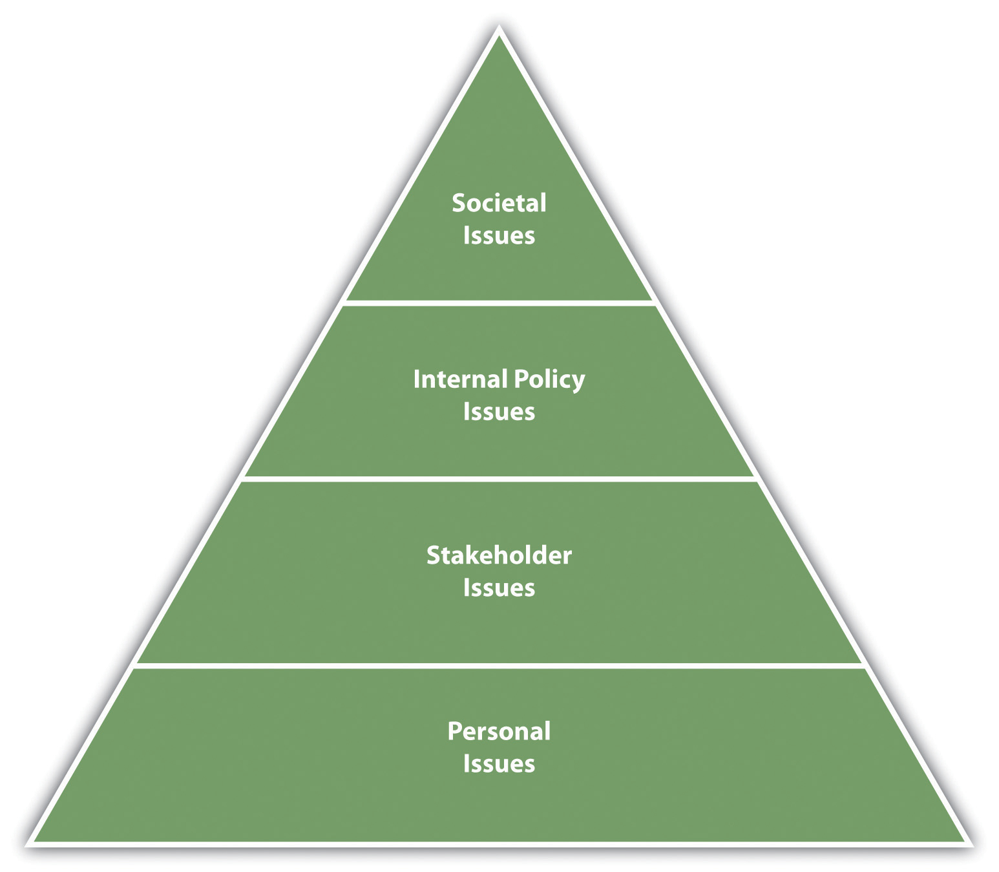
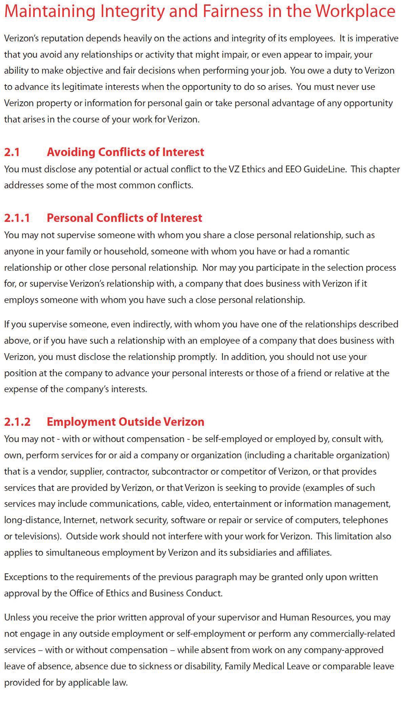

Before we begin our conversation on ethics, it is important to note that making ethical decisions is an emotional intelligence skill, specifically self-management. We know that our emotional intelligence skills contribute to our career success, so learning how to make ethical decisions is imperative to development of this human relations skill.
First, though, what exactly is ethics? EthicsA set of values that define right and wrong. is defined as a set of values that define right and wrong. Can you see the challenge with this ambiguous definition? What exactly is right and wrong? That obviously depends on the person and the individual situation, which is what makes ethics difficult to more specifically define. ValuesPrinciples or standards that a person finds desirable. are defined as principles or standards that a person finds desirable. So we can say that ethics is a set of principles that a person or society finds desirable and help define right and wrong. Often people believe that the law defines this for us. To an extent it does, but there are many things that could be considered unethical that are not necessarily illegal. For example, take the popularized case where a reality production crew was filming about alcoholism—a show called Intervention. They followed one woman who got behind the wheel to drive and obviously was in no state to do so. The television crew let her drive. People felt this was extremely unethical, but it wasn’t illegal because they were viewed as witnesses and therefore had no legal duty to intervene.Weinstein, B. (2007, October 15). If it’s ethical, it’s legal, right? Businessweek, accessed February 24, 2012, http://www.businessweek.com/managing/content/oct2007/ca20071011_458606.htm This is the difference between something ethical and illegal. Something may not necessarily be illegal, but at the same time, it may not be the right thing to do.
While there may appear to be a difference in ethics between individuals and the organization, often individuals’ ethics are shown through the ethics of an organization, since individuals are the ones who set the ethics to begin with.Brown, M. (2010). Ethics in organizations. Santa Clara University, accessed June 2, 2012, http://www.scu.edu/ethics/publications/iie/v2n1/ In other words, while we can discuss organizational ethics, remember that individuals are the ones who determine organizational ethics, which ties the conversation of organizational ethics into personal ethics as well. If an organization can create an ethically oriented culture,Sims, R. R. (1991). Journal of Business Ethics, 10(7), 493–506 it is more likely to hire people who behave ethically. This behavior is part of human relations, in that having and maintaining good ethics is part of emotional intelligence. Of our four levels of ethics discussed next, the first two may not apply to us directly as individuals in the company. As possible leaders of an organization, however, presenting all four in this section is necessary for context.
There are four main levels of ethical levels within organizations.Rao Rama, V. S. (2009, April 17). Four levels of ethics. Citeman Network, accessed February 24, 2012, http://www.citeman.com/5358-four-levels-of-ethical-questions-in-business.html The first level is societal issues. These are the top-level issues relating to the world as a whole, which deal with questions such as the morality of child labor worldwide. Deeper-level societal issues might include the role (if any) of capitalism in poverty, for example. Most companies do not operate at this level of ethics, although some companies, such as Tom’s Shoes, feel it is their responsibility to ensure everyone has shoes to wear. As a result, their “one for one” program gives one pair of shoes to someone in need for every pair of shoes purchased. Concern for the environment, for example, would be another way a company can focus on societal-level issues. This level of ethics involves areas of emotional intelligence we have discussed, specifically, an individual’s empathy and social awareness. Many companies take a stand on societal ethics in part for marketing but also in part because of the ethics the organization creates due to the care and concern for individuals.
Our second level of ethics is stakeholder’s issues. A stakeholderAnyone affected by a company’s actions. is anyone affected by a company’s actions. In this level, businesses must deal with policies that affect their customers, employees, suppliers, and people within the community. For example, this level might deal with fairness in wages for employees or notification of the potential dangers of a company’s product. For example, McDonald’s was sued in 2010 because the lure of Happy Meal toys were said to encourage children to eat unhealthy food.Jacobson, M. (2010, June 22). McDonald’s lawsuit: Using toys to sell Happy Meals, accessed February 24, 2012, http://www.huffingtonpost.com/michael-f-jacobson/mcdonalds-lawsuit-manipul_b_621503.html This is a stakeholder issue for McDonald’s, since it affects customers. Although the case was dismissed in April 2012,The Associated Press. (2012, April 5). Calif. judge dismisses suit against McDonald’s toys. USA Today, accessed June 4, 2012, http://www.usatoday.com/money/industries/food/story/2012-04-05/mcdonalds-happy-meals-toys-lawsuit/54040390/1 the stakeholder issue revolves around the need for companies to balance healthy choices and its marketing campaigns.
The third level is the internal policy issue level of ethics. In this level, the concern is internal relationships between a company and employees. Fairness in management, pay, and employee participation would all be considered ethical internal policy issues. If we work in management at some point in our careers, this is certainly an area we will have extensive control over. Creation of policies that relate to the treatment of employees relates to human relations—and retention of those employees through fair treatment. It is in the organization’s best interests to create policies around internal policies that benefit the company, as well as the individuals working for them.
The last level of ethical issues is personal issues. These deal with how we treat others within our organization. For example, gossiping at work or taking credit for another’s work would be considered personal issues. As an employee of an organization, we may not have as much control over societal and stakeholder issues, but certainly we have control over the personal issues level of ethics. This includes “doing the right thing.” Doing the right thing affects our human relations in that if we are shown to be trustworthy when making ethical decisions, it is more likely we can be promoted, or at the very least, earn respect from our colleagues. Without this respect, our human relations with coworkers can be impacted negatively.
One of the biggest ethical challenges in the workplace is when our company’s ethics do not meet our own personal ethics. For example, suppose you believe strongly that child labor should not be used to produce clothing. You find out, however, that your company uses child labor in China to produce 10 percent of your products. In this case, your personal values do not meet the societal and stakeholder values you find important. This kind of difference in values can create challenges working in a particular organization. When choosing the company or business we work for, it is important to make sure there is a match between our personal values and the values within the organization.
Figure 5.1 The Four Levels of Ethics in Organizations
How important is it for you to work for an organization that has values and ethics similar to yours?
People are not born with a set of values. The values are developed during the aging process. We can gain our values by watching others, such as parents, teachers, mentors, and siblings. The more we identify with someone, say, our parents, the more likely we are to model that person’s behavior. For example, if Jenny sees her father frequently speed when driving on the highway, there is a good chance she will model that behavior as an adult. Or perhaps because of this experience, Jenny ends up doing the exact opposite and always drives the speed limit. Either way, this modeling experience affected her viewpoint. Likewise, if Jenny hears her mother frequently speak ill of people or hears her lying to get out of attending events, there is a good chance Jenny may end up doing the same as an adult—or the opposite. Besides our life models, other things that can influence our values are the following:
Our personality affects our values, too. For example, in Chapter 3 "Manage Your Stress", we discussed type A personalities and their concern for time. Because of this personality trait, the type A person may value using their time wisely.
While companies may have codes of ethics and policies in place, there is no doubt that behaving ethically—with or without these codes—is a key ingredient to successful human relationships with others. As we have discussed so far throughout the book, emotional intelligence is a key component to career success. Aspects of emotional intelligence, which relate to ethics, include self-management, social awareness, and empathy. Lacking social awareness and empathy when it comes to ethics can have disastrous effects. For example, after the 2010 BP oil spill in the Gulf, former CEO of BP Tony Hayward said, “I’d like my life back,”Durando, J. (2010, June 1). BP’s Tony Hayward: I’d like my life back, USA Today, accessed June 3, 2012, http://content.usatoday.com/communities/greenhouse/post/2010/06/bp-tony-hayward-apology/1 but later watched yacht races, showing a lack in social awareness (how our actions affect others) and empathy. As he said this, thousands of gallons of oil leaked into the Gulf, affecting thousands of people living in the area. Even though Hayward apologized later, the damage had been done, as he showed his lack of social awareness and empathy for the situation. This can be taken for a sign of lack of ethics. Learning how to make ethical decisions makes us more trustworthy, honest, and caring of how our decisions affect others. When we make ethical decisions and are viewed as ethical individuals, our career can begin to grow and so can our relationships with others.
Since we know that everyone’s upbringing is different and may have had different models, religion, attitudes, and experiences, companies create policies and standards to ensure employees and managers understand the expected ethics. These sources of ethics can be based on the levels of ethics, which we discussed earlier. Understanding our own ethics and company ethics can apply to our emotional intelligence skills in the form of self-management and managing our relationships with others. Being ethical allows us to have a better relationship with our supervisors and organizations.
For example, companies create values statementsThe guiding principles of the organization, those things that the organization finds important., which explain their values and are tied to company ethics. A values statement is the organization’s guiding principles, those things that the company finds important. The following are examples:
Have you found yourself having to make any of these ethical choices within the last few weeks?
A company publicizes its values statements but often an internal code of conductA guideline for dealing with ethics in an organization. is put into place in order to ensure employees follow company values set forth and advertised to the public. The code of conduct is a guideline for dealing with ethics in the organization. The code of conduct can outline many things, and often companies offer training in one or more of these areas:
Some companies have 1-800 numbers, run by outside vendors, that allow employees to anonymously inform about ethics violations within the company. Someone who informs law enforcement of ethical or illegal violations is called a whistleblowerSomeone who informs law enforcement of ethical or illegal violations.. For example, Dr. Mitchell Magid worked as an oral surgeon for Sanford Health in North Dakota. When he reported numerous safety violations, he claimed he was fired from his job. In an initial ruling, Dr. Magid was awarded $900,000 for the firing, although Sanford Health claims he was fired for other reasons and will appeal the case.Outpatient Surgery. (n.d.). Whistle blowing surgeon awarded $900,000, accessed February 24, 2012, http://www.outpatientsurgery.net/news/2012/02/32-Whistleblowing-Surgeon-Awarded-900-000 In the United States, several laws protect whistleblowers. For example, the Occupational Health and Safety Act (OSHA) protects whistleblowers when they report safety violations. The Sarbanes-Oxley Act of 2002 has a whistleblower statute, which protects employees who whistleblows on wrongful financial dealings within an organization.Sarbanes Oxley Act, 2002, section 806.
Figure 5.2
Verizon, for example, has a forty-page code of conduct that outlines ethical expectations. This is an excerpt from that code of conduct.Verizon Code of Conduct, accessed February 24, 2012, https://www22.verizon.com/about/careers/pdfs/CodeOfConduct.pdf
Like a person, a company can have ethics and values that should be the cornerstone of any successful person. Understanding where our ethics come from is a good introduction into how we can make good personal and company ethical decisions. Ethical decision making ties into human relations through emotional intelligence skills, specifically, self-management and relationship management. The ability to manage our ethical decision-making processes can help us make better decisions, and better decisions result in higher productivity and improved human relations. We will discuss ethical decision making and self-management in Section 5.2 "Making Ethical Decisions".